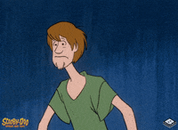

Shaggy

Shaggy Rogers, il cui vero nome è Norville Rogers, è un membro della "Mystery Inc." e il migliore amico di Scooby-Doo. È facilmente riconoscibile per il suo aspetto disordinato: capelli castani spettinati, barba leggera, maglietta verde oversize e pantaloni marroni.
Shaggy è noto per essere estremamente pauroso e affamato, con un appetito insaziabile che condivide con Scooby. Nonostante la sua codardia, mostra momenti di grande coraggio quando i suoi amici sono in pericolo. La sua personalità rilassata e comica, insieme alla sua stretta amicizia con Scooby-Doo, contribuisce al fascino duraturo della serie.
H O M E